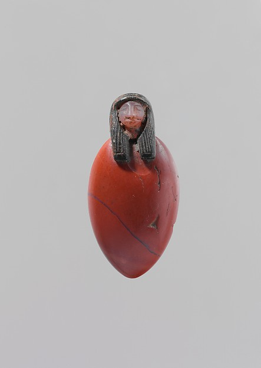
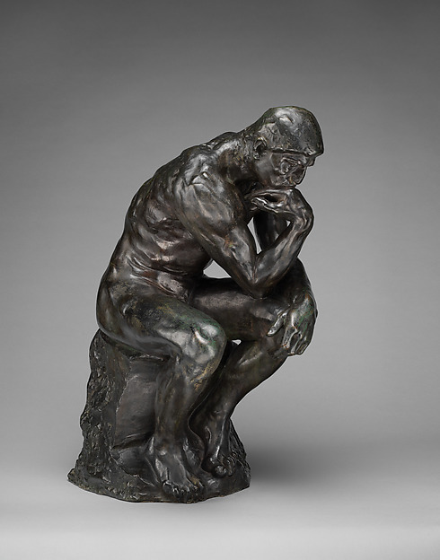

마음
Korean · maeum
mind; heart
Select a word to hear a person say it. Every entry uses a human recording. Romanian and Hausa preserve short phrases containing the word; both are labeled.
English
Select a word, or play the collection.
Speaker recording
A semantic map compares meanings. Here, selected dictionary senses connect “mind” with eight related areas. Select a cluster to see the words, hear recordings and check sources.
Connections show overlapping senses—not language ancestry, frequency or a universal definition. A word can belong to several clusters. This is a selected comparison, not a classification of every word in every language.
Heart and mind overlap in these dictionary senses. This does not mean the words have identical uses or that their speakers share one theory of emotion.
Korean · maeum
mind; heart
Mandarin Chinese · xīn
heart; mind
Japanese · kokoro
heart; mind
Bengali · mon
mind; heart
These entries connect mental life with thinking or a thought. Grammar and context determine whether an English translation needs a faculty, an activity or its content.
Welsh
mind; thought
Tagalog
mind; thought
Armenian · mitkʻ
mind; thought
English “mind” can translate terms whose listed senses emphasize reasoning or understanding. The words are alternatives to compare in context, not a scale of intelligence.
Arabic · ʿaql
mind; reason
German
mind; understanding
Swahili
mind; intellect
Hausa
good sense; rationality
Recording: rashin hankali
These entries extend beyond an exclusively cognitive gloss. “Spirit,” “psyche” and “soul” themselves need interpretation; their presence in a dictionary does not establish a shared religious doctrine.
French
mind; spirit
Dutch
mind; spirit
Afrikaans
mind; spirit
Persian · ravān
psyche; soul; spirit
These words have both brain and mind senses. The lexical overlap is evidence about usage; it does not settle the philosophical relation between brain and mind.
Greek · myaló
mind; brain
Hebrew · moakh
mind; brain
Urdu · dimāġ
mind; brain
Hausa hankali includes attention and focus. English uses the verb “mind” for attending or taking care. This compares a noun’s senses with a verb’s uses, not identical grammatical categories.
Hausa
attention; focus
Recording: rashin hankali
English
verb: attend; take care
Korean 마음 also has intention and will senses. English “mind” can name an intention or inclination. The same Korean word therefore appears here and in Heart & feeling.
Korean · maeum
intention; will
English
intention; inclination
English mind descends through Old English gemynd, associated with memory. “Keep in mind” preserves a remembering use today. This historical example is distinct from the modern-language comparisons elsewhere in the map.
English
remembering: keep in mind
Old English: gemynd. A historical form, not an additional recording. Word history.
The same body can carry different answers. Explore reported locations, gestures and historical accounts. Each layer keeps its own evidence visible.
Survey · Anglin, 2014
97.1% named the head or brain.
This was the free-response result for mind in a study recruiting 206 Rutgers students. Participants also selected locations on a body diagram.
These are reported beliefs in one student sample, not observed spontaneous gestures or a cross-cultural census.
Survey · Anglin, 2014
40.5% named head, brain or mind; 12.7% named heart or chest.
These are selected free-response categories. Another 22.4% named the body without specifying one region.
Other responses are not plotted. These percentages describe this study’s respondents, not the world.
Survey · Anglin, 2014
42.0% named heart or chest; 22.0% named head, brain or mind.
These are selected free-response categories from the same study. Changing the term changed the pattern of answers.
Other responses included the body generally and no bodily location. This does not establish that a soul has a physical location.
Experiment · Alsmith & Longo, 2014
Self-location judgments clustered around head and upper torso.
Participants adjusted a pointer toward themselves while blindfolded, or judged its alignment visually. The study asked about the self.
This is a structured experiment, not a study of spontaneous gestures for the word “mind.”
Contributor observation · Korea
People point to the heart when referring to maeum.
Matty Wegehaupt reports this gesture from his experience in Korea. The word 마음 includes mind and heart, as well as intention and will.
The gesture is a contributor’s observation. The dictionary supports the word’s senses; it does not establish how often or how widely the gesture occurs.
Documented sign · American Sign Language
The forefinger points toward the side of the upper head.
HandSpeak documents this form for MIND. A sign’s location is part of how the language expresses meaning.
The sign does not by itself reveal a signer’s theory of consciousness. ASL is distinct from other signed languages.
Historical account · ancient Egypt
The heart has a place in accounts of mind and memory.
The British Museum’s Greenfield Papyrus record connects these aspects of a person with the heart, within a funerary and religious setting.
This textual evidence is not an observation of how ancient Egyptians pointed to themselves.
Historical lexical record · Chinese
Xīn connects the bodily heart and thinking.
The Chinese Text Project dictionary records these related senses. “Heart-mind” keeps the connection visible in translation.
A lexical record does not establish a pointing custom or one doctrine shared by all Chinese traditions.
A reported location, a conventional sign and a historical belief answer different questions. This explorer presents selected evidence, not a worldwide map of where consciousness resides.
Sign languages are languages in their own right. ASL and BSL are distinct; there is no single worldwide sign for mind. English labels here identify meanings to look up, not a word-for-word code. Gallaudet’s introduction.
ASL University demonstrates THINK and distinguishes related uses such as considering and losing a thought. Watch the movement in the full lesson.
ASL University · source and lesson
For MIND itself, HandSpeak’s MIND entry supplies a separate dictionary demonstration. Compare its MEMORY entry and historical example.
This dictionary example is credited to the University of Bristol & Deaf Studies Trust. SignBSL also lists other recordings; the displayed example is not the only possible usage.
SignBSL · source, credit and variants
The video could not load. Use the source link to watch it.
These are two starting resources for signed languages, separate from the 50 spoken recordings. Demonstrations retain their providers’ attribution. Deaf-led teaching and contextual examples are essential to extending this section.
A written character, a funerary object and a sculpted body represent different kinds of evidence. Each makes an aspect of mental life visible in a particular cultural setting.
Chinese xīn connects the bodily heart and thinking in the historical lexical record. Here 心 is typeset in a modern sans-serif face, not presented as an ancient calligraphic artifact.
The same character appears in Jikji’s fuller title. Its use across languages does not make their meanings identical.
Chinese Text Project · lexical source · Jikji
This Egyptian amulet joins a stylized heart to a human head. The Met dates it to approximately 1550–721 BCE. Its material form belongs to funerary practice.
For the connection to mental life, the British Museum’s Greenfield Papyrus account places mind and memory in the heart.
The Met · object 38.8 · Heart, mind and memoryThe Metropolitan Museum of Art. Gift of Miss A. M. Hegemann, 1938. Public-domain image.

Rodin’s The Thinker makes concentrated thought visible through posture and muscular tension. It began within The Gates of Hell; this bronze was cast around 1910 from a model conceived around 1880.
The interpretation concerns this sculpture. A seated figure is not automatically a universal symbol for mind.
The Met · object 11.173.9The Metropolitan Museum of Art. Gift of Thomas F. Ryan, 1910. Public-domain image.
Gesture observation: Matty Wegehaupt, shared 10 October 2026. Korean 마음 and pointing toward the heart.
50 languages
mind; spirit
ʿaql
mind; reason
mitkʻ
mind; thought
mind; reason
mind; consciousness
rozum
mind; reason
mon
mind; heart
um
mind; intellect
seit
mind; mental state
sam1
heart; mind
mind
mind
mind; spirit
mind
mind
mind; spirit
mind; understanding
myaló
mind; brain
mind; intellect; attention
Recorded phrase: rashin hankali
moakh
mind; brain
intellect; understanding
mind; intellect
mind
kokoro
heart; mind
akal
mind
maeum
mind; heart
akyl
mind; reason
mind; intellect
manassŭ
mind
xīn
heart; mind
man
mind; heart
mind; disposition
mind; spirit
mana
mind; heart
ravān
psyche; soul; spirit
mind; intellect
mind
mind
Recorded phrase: ține minte
um
mind; intellect
mind
mind; intellect
mind; understanding
mind; thought
maṉam
mind; heart
aqıl
mind; reason
manasu
mind; heart
mind; intellect
rozum
mind; reason
dimāġ
mind; brain
mind; thought
These words have senses that overlap with mind, heart, thought, spirit or understanding. Each entry names a relevant sense; it does not make the words exact equivalents. A dictionary gloss cannot stand for a whole culture or philosophical tradition.
Recordings preserve individual voices and accents. Romanizations help identify words; they are not English pronunciation guides. Selection checks pair the recording’s documented language and word with its dictionary entry. The collection has not received native-speaker review in every language. French and Swedish include an article. Romanian and Hausa preserve a short phrase containing the selected word, with the phrase shown before playback.
Read the syllabus’s language comparison · Visit the WATER project
Human recordings from Wikimedia Commons and Lingua Libre. The original file page supplies each recording’s attribution and reuse terms. Brief meanings refer to the linked dictionaries, principally Wiktionary; Wiktionary text license. Sources checked 10 October 2026.